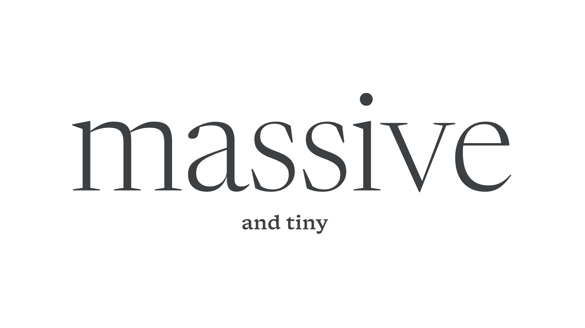

Display
By Google Fonts Knowledge contributors · Google Fonts Knowledge.
Original article · Source on GitHub · CC BY-SA 4.0. Text, illustrations and existing credits reproduced from the licensed Knowledge repository. Open Shelf adapted the layout and links; these adaptations are also CC BY-SA 4.0. No endorsement implied.
“Display” means type intended for large sizes. When referring to optical sizing, Display is a counterpart to Body and represents stylistic differences that make a Display variant more suitable to being set at large sizes, such as greater stroke contrast and tighter spacing.

Display can also be used as a catch-all term for a loose grouping of decorative typefaces, which can be a useful genre classification when choosing fonts from a large library. These are faces that are only ever intended for large sizes, usually due to genre, decoration, or fine detail.